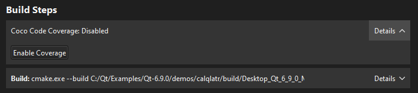
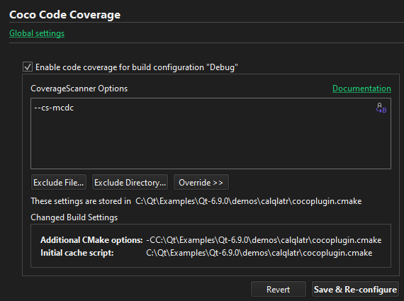

Set up code coverage from Coco
With Coco, you can measure and analyze the code coverage of tests. The following sections describe how to set up a project for code coverage. For more information about viewing the results in Qt Creator, see View code coverage reports from Coco.
To use the plugin, you must download and install Coco version 6.0 or later.
Note: Enable the Coco plugin to use it.
Set Coco installation directory
Go to Preferences > Coco to set the Coco installation directory. Usually, you don't need to change the default value.
Create a build configuration for Coco
To create a build configuration for Qt Creator projects that you build with qmake or CMake:
- Go to Projects > Build Settings.
- Select an existing build configuration, such as Debug, and then select Clone to clone it with a new name, such as DebugCoverage.
- Configure the clone for use with Coco.
Do not switch back and forth between coverage and normal builds using the same build configuration.
Build Settings > Build Steps > Coco code coverage shows whether code coverage is on or off for the build configuration. Select Enable Coverage or Disable Coverage to turn on or off code coverage.

Set code coverage for a project
To specify code coverage settings for a project, go to Projects > Project Settings > Coco Code Coverage.

| Setting | Purpose |
|---|---|
| Enable code coverage for build configuration <name> | Turns on and off code coverage for a build configuration. |
| CoverageScanner Options | Code coverage options (optional). |
| Exclude File | Excludes a file from instrumentation. |
| Exclude Directory | Excludes a directory from instrumentation. |
| Override | Enter commands to add them to the end of the settings file. Use this option when the usual configuration flags are not enough. |
| Changed Build Settings | Lists the changed project build settings. |
| Revert | Reloads the coverage settings from the current settings file. |
| Save and Save & Re-configure | Write the settings to the settings file and reconfigure the project if necessary. |
If code coverage is on, the plugin generates a settings file that the build tool reads first. It changes the build process to use Coco compiler wrappers instead of the original compiler. The settings file is always located in the root directory of the project sources. It also has the coverage flags and possible overrides. Check it into version control to preserve the settings.
qmake projects
For qmake projects, the settings file is the cocoplugin.prf feature file.
For a command-line build, run qmake with the additional options:
CONFIG+=cocoplugin COCOPATH=<Coco directory>
Also, set the environment variable QMAKEFEATURES to the directory where cocoplugin.prf is located.
CMake projects
For CMake projects, the settings file is the cocoplugin.cmake CMake cache preload script. Also, the compiler files cocoplugin-gcc.cmake, cocoplugin-clang.cmake, and cocoplugin-visualstudio.cmake are created in the same directory. They are needed for a command-line build.
To build the project from the command line (when compiling with GCC), enter:
cmake <other options> -C <project dir>/cocoplugin-gcc.cmake
The file cocoplugin-gcc.cmake includes cocoplugin.cmake.
If you use some other compiler than GCC, Clang, or MSVC, modify one of the compiler files for that compiler.
See also Configure projects for building, Enable and disable plugins, View code coverage reports from Coco, Font & Colors, and Analyzing Code.